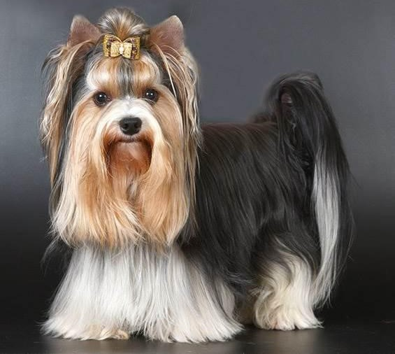

Biewer Terrier
Overview
The Biewer Yorkshire Terrier is a great companion dog. He is ready to accompany the owner everywhere, causing good-natured smiles from passers-by. This is not a sofa dog, but a full-fledged terrier with expressive charisma and a serious character. The Beaver Yorkie has a lot of energy, so it will not be boring with him.
Origin
Like many other breeds, the Biewer Yorkshire Terrier breed appeared by chance. The first representatives were shown at the show ring in Wiesbaden in 1988 by breeders of Yorkshire terriers Werner and Gertrud Biever. In their kennel, puppies were unexpectedly born with an absolutely non-standard color for the breed. A year later, the new breed was registered by the German club A.C.H.-L.e.V.
https://www.youtube.com/watch?v=AvjnBaHkDh0Character
Usually representatives of decorative breeds have a calm character. But the Biewer Yorkshire Terrier is not like that at all. He is energetic, ready to play all day long. He is constantly busy or interested in something, becomes the "tail" of the owner and with great joy accompanies all his movements around the house and not only. The nature of the representatives of the breed differs significantly depending on the sex. Boys are more balanced and calm, but girls can have truly feline character traits: independence, unpredictability, cunning. But the owner and family are adored by both. Beaver Yorkies are friendly with children, especially if they grow up together. They are distrustful and attentive to strangers, but if they see the owner’s disposition towards them, they are ready to make friends. The Biewer Yorkie differs from the classic Yorkshire Terriers in an incredibly affectionate and calm character and a stronger psyche.
Health
Beaver York has a fairly good health. He did not inherit the bone and joint problems from the classic Yorkshire Terrier. But, unfortunately, dogs of this breed are prone to other genetic diseases, including dislocation of the lens of the eye and progressive retinal atrophy, urolithiasis, food allergies, and pancreatitis. Therefore, when choosing a pet, it is worth asking about the genetic characteristics of the parents. Reliable nurseries usually provide this data without any problems. In addition to genetic health problems, a dog can develop various diseases with improper care and nutrition. Therefore, in addition to healthy ancestors, proper care and diet are important for a pet.